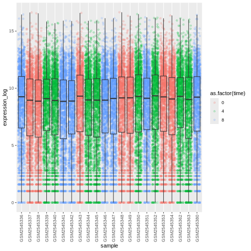
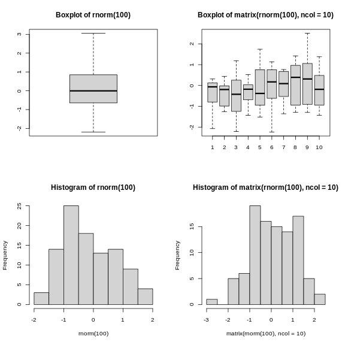

Image 1 of 1: ‘Two graphs showing the exponential increase of the number of CRAN packages from 2000 to 2018. The figure on the right shows linear trend for the log of number of packages.’
Exponential increase of the number of packages available on CRAN, the Comprehensive R Archive
Network. From the R Journal, Volume 10/2, December 2018.
Figure 2
Image 1 of 1: ‘Screenshot of the RStudio interface showing the typical four panel setup.’
RStudio interface screenshot. Clockwise from top left: Source,
Environment/History, Files/Plots/Packages/Help/Viewer, Console.
Figure 3
Image 1 of 1: ‘Screenshot of the RStudio General Options panel.’
Set ‘Save workspace to .RData on exit’ to ‘Never’
Figure 4
Image 1 of 1: ‘Screenshot of the RStudio Code Options panel.’
Set the default text encoding to UTF-8 to save us headache in the coming
future. (Figure from the link above).
Figure 5
Image 1 of 1: ‘Flow diagram showing the structure of the working directory and various directory of a typical RStuio project.’
Example of a working directory structure.
Figure 6
Image 1 of 1: ‘Screenshot of RStudio's Files panel.’
How it should look like at the beginning of this lesson
Figure 7
Image 1 of 1: ‘Figure form Nobel et al. (2009) showing a complex bioinformatics project structure.’
Directory structure for a sample bioinformatics project.
Figure 8
Image 1 of 1: ‘Fake book cover showing a kitten with title 'Changing Stuff and Seeing What Happens.'’
Figure 9
Image 1 of 1: ‘Screenshot of RStudio's Help panel.’
Image 1 of 1: ‘Figure showing the long table format on the left and wide table format on the right and arrows illustrating how the values in the 'sample' column on the left have become column names on the right and how the values in the 'expression' column on the left have become values on the the right. Below is the call to 'pivot_wider()' with annotations pointing to the 'sample' and 'expression' function arguments.’
Wide pivot of the rna data.
Figure 2
Image 1 of 1: ‘Figure showing the long table format on the left and wide table format on the right and arrows illustrating how the column names on the left have become a new column 'sample' on the left and the values in the wide table on the right have become a new column 'expression' on the left. Below is the call to 'pivot_wider()' with annotations pointing to the 'sample', 'expression' and the '-gene' arguments.’
Long pivot of the rna data.
Figure 3
Image 1 of 1: ‘A two by two table with X and Y row names and Female and Male column names showing the total counts for each X/Y and Female/Male combination. The Y/Female combinations shows 3 counts, while all other counts are above 2000 counts.’
Image 1 of 1: ‘Default histogram produced by ggplot() and geom_histogram() for the expression data.’
Figure 2
Image 1 of 1: ‘Histograms produced by ggplot() and geom_histogram() for the expression data with bin set of 15 (top) and binwith set to 2000 (bottom).’
Figure 3
Image 1 of 1: ‘Histograms produced by ggplot() and geom_histogram() for the expression data with bin set of 15 (top) and binwith set to 2000 (bottom).’
Figure 4
Figure 5
Image 1 of 1: ‘Histograms produced by ggplot(), geom_histogram() and scale_x_log10() for the log of expression.’
Figure 6
Image 1 of 1: ‘Scatter plot produced by ggplot() and geom_point() comparing the log-foldchanges computed above. All dots are black.’
Figure 7
Image 1 of 1: ‘Scatter plot produced by ggplot() and geom_point() comparing the log-foldchanges computed above. All dots are semi-transparent black.’
Figure 8
Image 1 of 1: ‘Scatter plot produced by ggplot() and geom_point() comparing the log-foldchanges computed above. All dots are semi-transparent blue.’
Figure 9
Image 1 of 1: ‘Scatter plot produced by ggplot() and geom_point() comparing the log-foldchanges computed above. Dots are colour-coded based on the gene's biotype.’
Figure 10
Image 1 of 1: ‘Scatter plot produced by ggplot() and geom_point() comparing the log-foldchanges computed above. Dots are colour-coded based on the gene's biotype.’
Figure 11
Image 1 of 1: ‘Scatter plot produced by ggplot() and geom_point() comparing the log-foldchanges computed above. Dots are colour-coded based on the gene's biotype. A black line of slope 1 crossing the origin was added by geom_abline().’
Figure 12
Image 1 of 1: ‘Scatter plot produced by ggplot() and geom_point() comparing the log-foldchanges computed above. Dots are colour-coded based on the gene's biotype. A black line of slope 1 crossing the origin was added by geom_abline().’
Figure 13
Image 1 of 1: ‘Scatter plot produced by ggplot() and geom_hexbin() comparing the log-foldchanges computed above shows hexagons coloured based on the underlying dot density. A black line of slope 1 crossing the origin was added by geom_abline().’
Figure 14
Image 1 of 1: ‘Figures showing a stretch of overlapping points indicating the log of expression + 1 for each sample. The points are coloured with different shades of blue for samples collected at different time points.’
Figure 15
Image 1 of 1: ‘Boxplot showing the distribution of log expression + 1 values for each sample, as produced by geom_boxlpot(). Each boxplot is filled with white colour.’
Figure 16
Image 1 of 1: ‘Boxplot and dots showing the distribution of log expression + 1 values for each sample, as produced by geom_boxlpot(). Each boxplot is transparent and the jittered dots are semi-transparent tomato-coloured and behind the boxpots.’
Figure 17
Image 1 of 1: ‘Boxplot and dots showing the distribution of log expression + 1 values for each sample, as produced by geom_boxlpot(). Each boxplot is transparent and the jittered dots are semi-transparent tomato-coloured. This time, the boxplots are behind the dots.’
Figure 18
Image 1 of 1: ‘Boxplot and dots showing the distribution of log expression + 1 values for each sample, as produced by geom_boxlpot(). Each boxplot is transparent and the jittered dots are semi-transparent tomato-coloured. The sample labels are displayed vertically and readable.’
Figure 19
Image 1 of 1: ‘Boxplot and dots showing the distribution of log expression + 1 values for each sample, as produced by geom_boxlpot(). On the first figure, each boxplot is transparent and the jittered dots are semi-transparent and coloured in different shares of blue. On the second figures, each boxplot is transparent and the jittered dots are semi-transparent and coloured red, green and blue.’
Figure 20
Image 1 of 1: ‘Boxplot and dots showing the distribution of log expression + 1 values for each sample, as produced by geom_boxlpot(). On the first figure, each boxplot is transparent and the jittered dots are semi-transparent and coloured in different shares of blue. On the second figures, each boxplot is transparent and the jittered dots are semi-transparent and coloured red, green and blue.’

Figure 21
Image 1 of 1: ‘Violin plot showing the distribution of log expression + 1 values for each sample, as produced by geom_violin(). Each boxplot is transparent and the jittered dots are semi-transparent and coloured red, green and blue.’
Figure 22
Image 1 of 1: ‘Violin plot showing the distribution of log expression + 1 values for each sample, as produced by geom_violon(). Each violin plot is coloured in red or blue depending on the sex variable.’
Figure 23
Image 1 of 1: ‘Line plot, as produced by geom_line(), but the lines are clearly not show what we expect.’
Figure 24
Image 1 of 1: ‘Line plot, as produced by geom_line(), with 10 lines showing increasing expression values over time.’
Figure 25
Image 1 of 1: ‘Line plot, as produced by geom_line(), with 10 colour-coded lines showing increasing expression values over time.’
Figure 26
Image 1 of 1: ‘Line plot, as produced by geom_line(), with 10 sub-plots/facets, each showing one line with increasing expression values over time. All y-scales are identical.’
Figure 27
Image 1 of 1: ‘Line plot, as produced by geom_line(), with 10 sub-plots/facets, each showing one line with increasing expression values over time. y-scales are now adapted to the expression range for each facet/gene.’
Figure 28
Image 1 of 1: ‘Line plot, as produced by geom_line(), with 10 sub-plots/facets, each showing two coloured lines (red for Female and blue for Make) with increasing expression values over time.’
Figure 29
Image 1 of 1: ‘Line plot, as produced by geom_line(), with 10 sub-plots/facets, each showing two coloured lines (red for Female and blue for Make) with increasing expression values over time. The figure background is now white.’
Figure 30
Image 1 of 1: ‘Line plot, as produced by geom_line(), with 21 sub-plots/facets, each showing one line with expression values over time for each chromosome.’
Figure 31
Image 1 of 1: ‘Two line plots above each other, each showing 10 lines coloured by gene. The top facet shows the expression values for Female sample, the bottom one for Male samples.’
Figure 32
Image 1 of 1: ‘Two line plots next to each other, each showing 10 lines coloured by gene. The left facet shows the expression values for Female sample, the right one for Male samples.’
Figure 33
Figure 34
Figure 35
Figure 36
Figure 37
Figure 38
Figure 39
Figure 40
Figure 41
Figure 42
Figure 43
Figure 44
Figure 45
Figure 46
Figure 47
Figure 48
Figure 49
Figure 50
Image 1 of 1: ‘Successive layers added on top of each other.’
Successive layers added on top of each other.
Figure 51
Image 1 of 1: ‘Plotting boxplots (top) and histograms (bottom) vectors (left) or a matrices (right).’

Plotting boxplots (top) and histograms (bottom) vectors (left) or a
matrices (right).